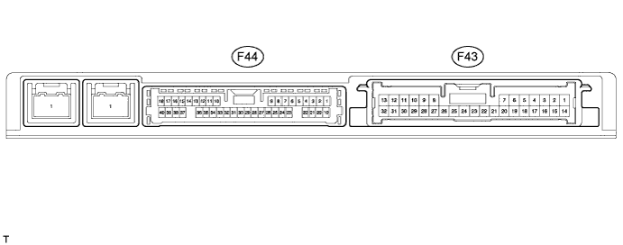

PARKING ASSIST MONITOR SYSTEM > TERMINALS OF ECU |
| CHECK PARKING ASSIST ECU |

Disconnect the F43 ECU connector.
Measure the resistance and voltage according to the value(s) in the table below.
| Terminal No. (Symbol) | Wiring Color | Terminal Description | Condition | Specified Condition |
| F43-1 (IG) - F43-4 (GND1) | G - W-B | Ignition signal input | Engine switch on (IG) | 11 to 14 V |
| F43-4 (GND1) - Body ground | W-B - Body ground | Ground | Always | Below 1 Ω |
| F43-6 (+B) - Body ground | L - Body ground | Power source | Always | 11 to 14 V |
| F43-14 (ACC) - F43-4 (GND1) | GR - W-B | Accessory | Engine switch off | Below 1 V |
| F43-14 (ACC) - F43-4 (GND1) | GR - W-B | Accessory | Engine switch on (ACC) | 11 to 14 V |
Reconnect the F43 ECU connector.
Measure the voltage and waveform according to the value(s) in the table below.
| Terminal No. (Symbol) | Wiring Color | Terminal Description | Condition | Specified Condition |
| F44-10 (CV+) - F43-4 (GND1) | R - W-B | Television camera display signal (NTSC) input | Engine switch on (IG), shift lever moved to R | Waveform |
| F44-11 (CGND) - F43-4 (GND1) | W - W-B | Television camera ground | Always | Below 1 V |
| F44-34 (CV-) - F43-4 (GND1) | Shielded - W-B | Television camera ground (shielded) | Always | Below 1 V |
| F44-35 (CB+) - F43-4 (GND1) | B - W-B | Power source to television camera | Engine switch on (IG), shift lever moved to R | 5.8 to 6.5 V |
 |
Using an oscilloscope, check the waveform.
| Item | Content |
| Terminal No. (Symbol) | F44-10 (CV+) - F43-4 (CGND) |
| Tool Setting | 0.2 V/DIV., 0.2 μsec./DIV. |
| Condition | Engine switch on (IG), shift lever moved to R |
| CHECK REAR TELEVISION CAMERA ASSEMBLY |
Measure the voltage and resistance according to the value(s) in the table below.
| Terminal No. (Symbol) | Wiring Color | Terminal Description | Condition | Specified Condition |
| S5-3 (CGND) - Body ground | W - Body ground | Ground | Always | Below 1 Ω |
| S5-4 (CB+) - S5-3 (CGND) | B - W | Power source | Engine switch on (IG), shift lever moved to R | 5.8 to 6.5 V |
| S5-2 (CV+) - S5-1 (CV-) | R - Shielded | Display signal | Engine switch on (IG), shift lever moved to R | Waveform |
|
Using an oscilloscope, check the waveform.
| Item | Content |
| Terminal No. (Symbol) | S5-2 (CV+) - S5-1 (CV-) |
| Tool Setting | 0.2 V/DIV., 0.2 μsec./DIV. |
| Condition | Engine switch on (IG), shift lever moved to R |
| CHECK MULTI-DISPLAY (Click here) |